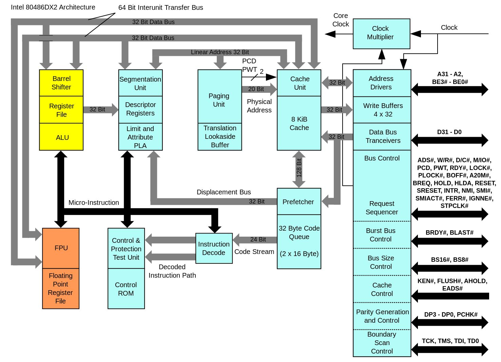
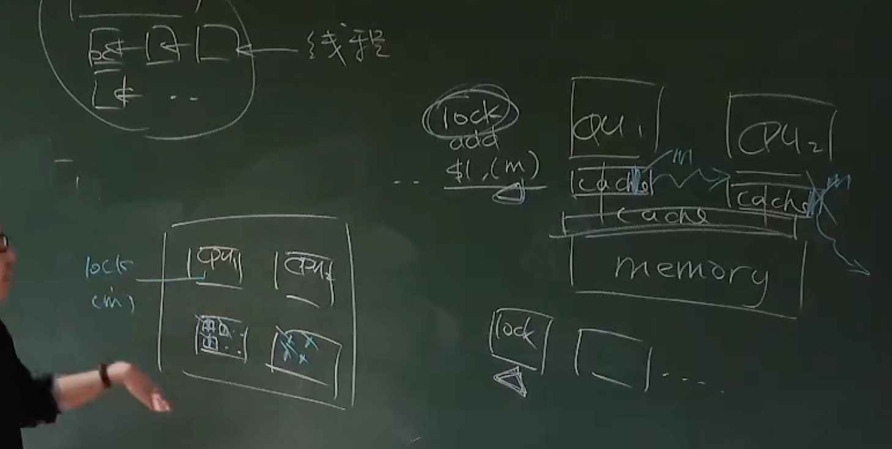
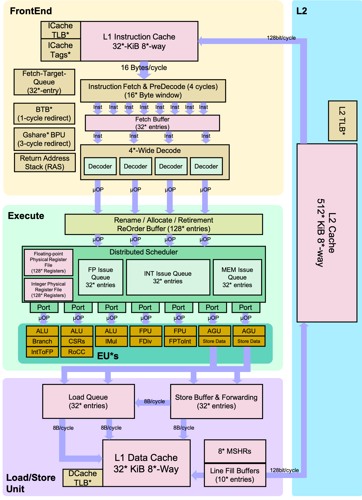

并发控制：互斥
Overview
复习
- 状态机、状态机、状态机
本次课回答的问题
- Q: 如何在多处理器上实现线程互斥？
本次课主要内容
- 自旋锁的实现
- 互斥锁的实现
收获
1、如何在多处理器上实现线程互斥？
互斥 (mutual exclusion)，“互相排斥”
一把 “排他性” 的锁——对于锁对象 lk
- 如果某个线程持有锁，则其他线程的
lock不能返回
实现互斥的根本困难：不能同时读/写共享内存
- 软件不够，硬件来凑 (自旋锁)
- 用户不够，内核来凑 (互斥锁)
- 找到你依赖的假设，并大胆地打破它
- Fast/slow paths: 性能优化的重要途径
2、自旋锁的实现
【这里看 6.s081 的课更好】
自旋锁的协议：有一把钥匙，放在桌子上，用一个东西和它交换，只有得到钥匙的人才可以进入临界区
借助一个指令 lock xchg，Atomic exchange (load + store) 实现互斥
这个原子指令的模型
- 保证之前的 store 都写入内存
- 保证 load/store 不与原子指令乱序
Lock 指令的现代实现，在 L1 cache 层保持一致性 (因为不同的核的L1 cache 是共享的)
- 相当于每个 cache line 有分别的锁
- store(x) 进入 L1 缓存即保证对其他处理器可见
自旋锁缺点：性能问题
- 自旋 (共享变量) 会触发处理器间的缓存同步，延迟增加
- 除了进入临界区的线程，其他处理器上的线程都在空转，争抢锁的处理器越多，利用率越低
- 获得自旋锁的线程可能被操作系统切换出去，操作系统不 “感知” 线程在做什么，100% 的资源浪费
自旋锁的使用场景
- 临界区几乎不 “拥堵”（只有一个线程进入临界区）
- 持有自旋锁时禁止执行流切换
但是应用程序做不到，只有操作系统可以
使用场景：操作系统内核的并发数据结构 (短临界区)，操作系统可以关闭中断和抢占，保证锁的持有者在很短的时间内可以释放锁
3、互斥锁的实现
自旋锁 (线程直接共享 locked)，更快的 fast path，xchg 成功 → 立即进入临界区，开销很小
睡眠锁 (通过系统调用访问 locked)，更快的 slow path，上锁失败线程不再占用 CPU
Futex 简易的实现（自旋锁和睡眠锁 结合），先在用户空间自旋
- 如果获得锁，直接进入
- 未能获得锁，系统调用
- 解锁以后也需要系统调用
Fast/slow paths: 性能优化的重要途径
一、共享内存上的互斥
1、回顾：并发编程
理解并发的工具
- 线程 = 人 (大脑能完成局部存储和计算)
- 共享内存 = 物理世界 (物理世界天生并行)
- 一切都是状态机
2、回顾：互斥算法
互斥 (mutual exclusion)，“互相排斥”
- 实现
lock_t数据结构和lock/unlockAPI:
一把 “排他性” 的锁——对于锁对象 lk
- 如果某个线程持有锁，则其他线程的
lock不能返回
3、在共享内存上实现互斥
失败的尝试
(部分) 成功的尝试
实现互斥的根本困难：不能同时读/写共享内存
- load (环顾四周) 的时候不能写，只能 “看一眼就把眼睛闭上”
- 看到的东西马上就过时了
- store (改变物理世界状态) 的时候不能读，只能 “闭着眼睛动手”
- 也不知道把什么改成了什么
- 这是~~简单、粗暴 (稳定)、有效~~的《操作系统》课
二、自旋锁 (Spin Lock)
自旋锁：有一把钥匙，放在桌子上，用一个东西和它交换，只有得到钥匙的人才可以进入临界区
1、解决问题的两种方法
提出算法、解决问题 (Dekker/Peterson/...'s Protocols)
或者……
改变假设 (软件不够，硬件来凑)
假设硬件能为我们提供一条 “瞬间完成” 的读 + 写指令
- 请所有人闭上眼睛，看一眼 (load)，然后贴上标签 (store)
- 如果多人同时请求，硬件选出一个 “胜者”
- “败者” 要等 “胜者” 完成后才能继续执行
2、x86 原子操作：LOCK 指令前缀
例子：sum-atomic.c
sum = 200000000
#include "thread.h"
#define N 100000000
long sum = 0;
void Tsum() {
for (int i = 0; i < N; i++) {
asm volatile("lock addq $1, %0": "+m"(sum));
}
}
int main() {
create(Tsum);
create(Tsum);
join();
printf("sum = %ld\n", sum);
}
# 有 lock 前缀
$ gcc sum-atomic.c -O2 -lpthread && ./a.out
sum = 200000000
# 去掉汇编中的 lock 前缀
$ gcc sum-atomic.c -O2 -lpthread && ./a.out
sum = 100916012
Atomic exchange (load + store)
xchg：两个数值交换
int xchg(volatile int *addr, int newval) {
int result;
asm volatile ("lock xchg %0, %1"
: "+m"(*addr), "=a"(result) : "1"(newval));
return result;
}
更多的原子指令：stdatomic.h (C11)
3、用 xchg 实现互斥
如何协调宿舍若干位同学上厕所问题？
- 在厕所门口放一个桌子 (共享变量)
- 初始时，桌上是 🔑
实现互斥的协议
- 想上厕所的同学 (一条 xchg 指令)
- 天黑请闭眼
- 看一眼桌子上有什么 (🔑 或 🔞)
- 把 🔞 放到桌上 (覆盖之前有的任何东西)
- 天亮请睁眼；看到 🔑 才可以进厕所哦
- 出厕所的同学
- 把 🔑 放到桌上
4、实现互斥：自旋锁
int table = YES;
void lock() {
retry:
int got = xchg(&table, NOPE);
if (got == NOPE)
goto retry;
assert(got == YES);
}
void unlock() {
xchg(&table, YES)
}
并发编程：千万小心
- 做详尽的测试 (在此省略，你们做 Labs 就知道了)
- 尽可能地证明 (model-checker.py 和 spinlock.py)
class Spinlock:
locked = ''
@thread
def t1(self):
while True:
while True:
self.locked, seen = '🔒', self.locked
if seen != '🔒': break
cs = True
del cs
self.locked = ''
@thread
def t2(self):
while True:
while True:
self.locked, seen = '🔒', self.locked
if seen != '🔒': break
cs = True
del cs
self.locked = ''
@marker
def mark_t1(self, state):
if localvar(state, 't1', 'cs'): return 'blue'
@marker
def mark_t2(self, state):
if localvar(state, 't2', 'cs'): return 'green'
@marker
def mark_both(self, state):
if localvar(state, 't1', 'cs') and localvar(state, 't2', 'cs'):
return 'red'
原子指令的模型
- 保证之前的 store 都写入内存
- 保证 load/store 不与原子指令乱序
5、原子指令的诞生：Bus Lock (80486)
486 (20-50MHz) 就支持 dual-socket 了

一个主板上有两个 CPU，都连着同一个 memory，有访问共享内存的场景
硬件上实现的锁
x86 体系结构中，缓存的一致性是个很大的包袱
所有 CPU 的 L1 cache 都是连起来的
一个 CPU 想要执行 lock，想要访问 M 的话，要把其他所有 CPU 的 M 踢出缓存

6、Lock 指令的现代实现
在 L1 cache 层保持一致性 (ring/mesh bus)
- 相当于每个 cache line 有分别的锁
- store(x) 进入 L1 缓存即保证对其他处理器可见
- 但要小心 store buffer 和乱序执行
L1 cache line 根据状态进行协调
- M (Modified), 脏值
- E (Exclusive), 独占访问
- S (Shared), 只读共享
- I (Invalid), 不拥有 cache line
7、RISC-V: 另一种原子操作的设计
考虑常见的原子操作：
- atomic test-and-set
reg = load(x); if (reg == XX) { store(x, YY); }
- lock xchg
reg = load(x); store(x, XX);
- lock add
t = load(x); t++; store(x, t);
它们的本质都是：
- load
- exec (处理器本地寄存器的运算)
- store
8、Load-Reserved/Store-Conditional (LR/SC)
【0:50:38】开始讲解 RISC-V 的指令
LR: 在内存上标记 reserved (盯上你了)，中断、其他处理器写入都会导致标记消除
SC: 如果 “盯上” 未被解除，则写入
9、Compare-and-Swap 的 LR/SC 实现
int cas(int *addr, int cmp_val, int new_val) {
int old_val = *addr;
if (old_val == cmp_val) {
*addr = new_val; return 0;
} else { return 1; }
}
cas:
lr.w t0, (a0) # Load original value.
bne t0, a1, fail # Doesn’t match, so fail.
sc.w t0, a2, (a0) # Try to update.
bnez t0, cas # Retry if store-conditional failed.
li a0, 0 # Set return to success.
jr ra # Return.
fail:
li a0, 1 # Set return to failure.
jr ra # Return
lr 和 sc 可以检查有没有人和我并发的在做这件事，fail 失败了，表示锁的拥堵
10、LR/SC 的硬件实现
BOOM (Berkeley Out-of-Order Processor)
- riscv-boom
lsu/dcache.scala- 留意
s2_sc_fail的条件- s2 是流水线 Stage 2
- (yzh 扒出的代码)

三、互斥锁 (Mutex Lock)
1、自旋锁的缺陷
性能问题 (0)
- 自旋 (共享变量) 会触发处理器间的缓存同步，延迟增加
性能问题 (1)
- 除了进入临界区的线程，其他处理器上的线程都在空转
- 争抢锁的处理器越多，利用率越低
性能问题 (2)
- 获得自旋锁的线程可能被操作系统切换出去
- 操作系统不 “感知” 线程在做什么
- (但为什么不能呢？)
- 实现 100% 的资源浪费
2、Scalability（伸缩性）: 性能的新维度
同一份计算任务，时间 (CPU cycles) 和空间 (mapped memory) 会随处理器数量的增长而变化。
- sum-scalability.c
- thread-sync.h
- 严谨的统计很难
- CPU 动态功耗
- 系统中的其他进程
- ……
- 严谨的统计很难
- Benchmarking crimes
sum-scalability.c
#include "thread.h"
#include "thread-sync.h"
#define N 10000000
spinlock_t lock = SPIN_INIT();
long n, sum = 0;
void Tsum() {
for (int i = 0; i < n; i++) {
spin_lock(&lock);
sum++;
spin_unlock(&lock);
}
}
int main(int argc, char *argv[]) {
assert(argc == 2);
int nthread = atoi(argv[1]);
n = N / nthread;
for (int i = 0; i < nthread; i++) {
create(Tsum);
}
join();
assert(sum == n * nthread);
}
thread-sync.h
#include <semaphore.h>
// Spinlock
typedef int spinlock_t;
#define SPIN_INIT() 0
static inline int atomic_xchg(volatile int *addr, int newval) {
int result;
asm volatile ("lock xchg %0, %1":
"+m"(*addr), "=a"(result) : "1"(newval) : "memory");
return result;
}
void spin_lock(spinlock_t *lk) {
while (1) {
intptr_t value = atomic_xchg(lk, 1);
if (value == 0) {
break;
}
}
}
void spin_unlock(spinlock_t *lk) {
atomic_xchg(lk, 0);
}
// Mutex
typedef pthread_mutex_t mutex_t;
#define MUTEX_INIT() PTHREAD_MUTEX_INITIALIZER
void mutex_lock(mutex_t *lk) { pthread_mutex_lock(lk); }
void mutex_unlock(mutex_t *lk) { pthread_mutex_unlock(lk); }
// Conditional Variable
typedef pthread_cond_t cond_t;
#define COND_INIT() PTHREAD_COND_INITIALIZER
#define cond_wait pthread_cond_wait
#define cond_broadcast pthread_cond_broadcast
#define cond_signal pthread_cond_signal
// Semaphore
#define P sem_wait
#define V sem_post
#define SEM_INIT(sem, val) sem_init(sem, 0, val)
测试一下
$ gcc sum-scalability.c -O2 -lpthread
$ time ./a.out 1
real 0m0.130s
user 0m0.123s
sys 0m0.003s
$ time ./a.out 2
real 0m0.760s
user 0m1.497s
sys 0m0.007s
$ time ./a.out 3
real 0m1.169s
user 0m3.462s
sys 0m0.015s
$ time ./a.out 32
real 0m9.258s
user 1m7.500s
sys 0m0.242s
同样的工作量，线程越多，效率越慢，为什么？
因为上面的三种性能问题

3、自旋锁的使用场景
- 临界区几乎不 “拥堵”（只有一个线程进入临界区）
- 持有自旋锁时禁止执行流切换
但是应用程序做不到
使用场景：操作系统内核的并发数据结构 (短临界区)
- 操作系统可以关闭中断和抢占
- 保证锁的持有者在很短的时间内可以释放锁
- (如果是虚拟机呢...😂)
- PAUSE 指令会触发 VM Exit
- 但依旧很难做好
4、实现线程 + 长临界区的互斥
作业那么多，与其干等 Online Judge 发布，不如把自己 (CPU) 让给其他作业 (线程) 执行？
“让” 不是 C 语言代码可以做到的 (C 代码只能计算)
-
把锁的实现放到操作系统里就好啦！
-
c syscall(SYSCALL_lock, &lk);- 试图获得
lk，但如果失败，就切换到其他线程
- 试图获得
-
c syscall(SYSCALL_unlock, &lk);- 释放
lk，如果有等待锁的线程就唤醒
- 释放
-
操作系统 = 更衣室管理员
- 先到的人 (线程)
- 成功获得手环，进入游泳馆
*lk = 🔒，系统调用直接返回
- 后到的人 (线程)
- 不能进入游泳馆，排队等待
- 线程放入等待队列，执行线程切换 (yield)
- 洗完澡出来的人 (线程)
- 交还手环给管理员；管理员把手环再交给排队的人
- 如果等待队列不空，从等待队列中取出一个线程允许执行
- 如果等待队列为空，
*lk = ✅
- 管理员 (OS) 使用自旋锁确保自己处理手环的过程是原子的
四、Futex = Spin + Mutex
1、关于互斥的一些分析
自旋锁 (线程直接共享 locked)
- 更快的 fast path
- xchg 成功 → 立即进入临界区，开销很小
- 更慢的 slow path
- xchg 失败 → 浪费 CPU 自旋等待
睡眠锁 (通过系统调用访问 locked)
- 更快的 slow path
- 上锁失败线程不再占用 CPU
- 更慢的 fast path
- 即便上锁成功也需要进出内核 (syscall)
2、Futex: Fast Userspace muTexes
小孩子才做选择。我当然是全都要啦！
- Fast path: 一条原子指令，上锁成功立即返回
- Slow path: 上锁失败，执行系统调用睡眠
- 性能优化的最常见技巧
- 看 average (frequent) case 而不是 worst case
- 性能优化的最常见技巧
POSIX 线程库中的互斥锁 (pthread_mutex)
- sum-scalability.c，换成 mutex
- 观察系统调用 (strace)
- gdb 调试
- set scheduler-locking on, info threads, thread X
线程库中的锁，绝大多数情况下不会触发系统调用，原子指令就解决了
只有在有争抢的情况下，触发系统调用
#include "thread.h"
#include "thread-sync.h"
#define N 10000000
mutex_t lock = MUTEX_INIT();
long n, sum = 0;
void Tsum() {
for (int i = 0; i < n; i++) {
mutex_lock(&lock);
sum++;
mutex_unlock(&lock);
}
}
int main(int argc, char *argv[]) {
assert(argc == 2);
int nthread = atoi(argv[1]);
n = N / nthread;
for (int i = 0; i < nthread; i++) {
create(Tsum);
}
join();
assert(sum == n * nthread);
}
测试一下
$ time ./a.out 1
real 0m0.203s
user 0m0.196s
sys 0m0.004s
$ time ./a.out 2
real 0m0.432s
user 0m0.331s
sys 0m0.374s
$ time ./a.out 3
real 0m0.552s
user 0m0.472s
sys 0m0.895s
$ time ./a.out 32
real 0m0.609s
user 0m0.706s
sys 0m3.881s
# -f 看到子进程的系统调用
$ strace -f ./a.out 32
3、Futex 简易的实现
先在用户空间自旋
- 如果获得锁，直接进入
- 未能获得锁，系统调用
- 解锁以后也需要系统调用
- futex.py
- 更好的设计可以在 fast-path 不进行系统调用
class Futex:
locked, waits = '', ''
def tryacquire(self):
if not self.locked:
# Test-and-set (cmpxchg, x86)
# Same effect, but more efficient than xchg
self.locked = '🔒'
return ''
else:
return '🔒'
def release(self):
if self.waits:
self.waits = self.waits[1:]
else:
self.locked = ''
@thread
def t1(self):
while True:
if self.tryacquire() == '🔒': # User, 不能获得锁的话，进内核
self.waits = self.waits + '1' # Kernel
while '1' in self.waits: # Kernel
pass
cs = True # User
del cs # User
self.release() # Kernel
@thread
def t2(self):
while True:
if self.tryacquire() == '🔒':
self.waits = self.waits + '2'
while '2' in self.waits:
pass
cs = True
del cs
self.release()
@thread
def t3(self):
while True:
if self.tryacquire() == '🔒':
self.waits = self.waits + '3'
while '3' in self.waits:
pass
cs = True
del cs
self.release()
@marker
def mark_t1(self, state):
if localvar(state, 't1', 'cs'): return 'blue'
@marker
def mark_t2(self, state):
if localvar(state, 't2', 'cs'): return 'green'
@marker
def mark_t3(self, state):
if localvar(state, 't3', 'cs'): return 'yellow'
@marker
def mark_both(self, state):
count = 0
for t in ['t1', 't2', 't3']:
if localvar(state, t, 'cs'):
count += 1
if count > 1:
return 'red'
RTFM (劝退)
- futex (7), futex (2)
- A futex overview and update (LWN)
- Futexes are tricky (论 model checker 的重要性)
- (我们不讲并发算法)
4、如何解决状态空间里的bug
如果状态空间里面有bug（红色的节点）,如何解决？
找一条从根节点到到红色节点的路径，上下文切换最少的路径（红红白白最少的路径），这就是最易理解的路径
这也找到一个最易理解的反例
总结
本次课回答的问题
- Q: 如何在多处理器系统上实现互斥？
Take-away message
- 软件不够，硬件来凑 (自旋锁)
- 用户不够，内核来凑 (互斥锁)
- 找到你依赖的假设，并大胆地打破它
- Fast/slow paths: 性能优化的重要途径